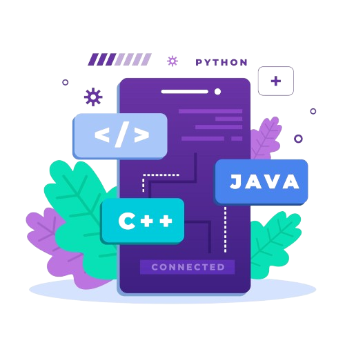

Sugeng Rawuh di Website Pribadi Saya yang Pastinya Lumayan Keren! Perkenalkan, saya seorang Web Developer yang berfokus pada pembuatan website dengan desain UI/UX yang menarik dan user-friendly. Saya percaya, sebuah website nggak hanya harus terlihat keren, tapi juga harus nyaman dan mudah digunakan.
UI/UX adalah proses merancang tampilan dan pengalaman pengguna dalam sebuah produk digital. UI (User Interface) berfokus pada bagaimana sebuah aplikasi atau website terlihat, mencakup elemen visual seperti warna, tombol, ikon, dan tata letak. Sementara itu, UX (User Experience) berfokus pada bagaimana pengguna merasakan dan berinteraksi dengan produk tersebut, memastikan alur penggunaan terasa mudah, cepat, dan nyaman. UI menciptakan kesan visual yang menarik, sedangkan UX memastikan pengguna dapat mencapai tujuannya tanpa kebingungan. Keduanya saling melengkapi untuk menghasilkan produk yang tidak hanya indah dilihat, tetapi juga menyenangkan untuk digunakan.
Saya adalah seorang Web Developer yang berfokus pada pembuatan website modern dan responsif menggunakan teknologi seperti HTML, CSS, JavaScript, PHP, Laravel, dan Tailwind CSS. Saya selalu berusaha untuk memberikan solusi digital yang mudah digunakan dan performa tinggi.